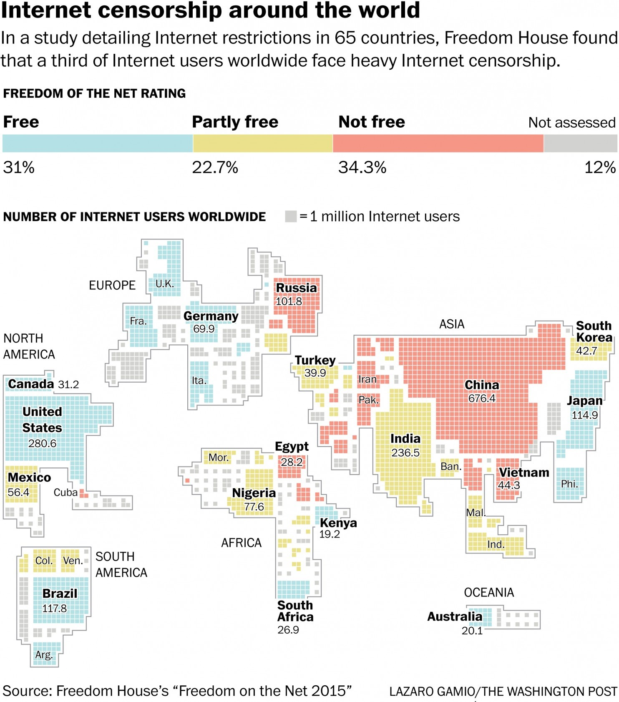

BRINGING DEMOCRACY TO THE WORLD
Most people who have grown up in the United States would likely agree that a democracy is a wonderful form of government. Whether a person has different opinions of social justice issues or political policies, people are glad that they as an individual have the right to vote for the person who will support a majority of their personal opinions. Democracy has given power to the people, and allowed large amounts of freedom to this country, while maintaining a certain level of order beneath government rule. Unfortunately, not all countries allow for this kind of freedom.
Many factors have contributed as well to the world’s modern ability to know what is happening in other parts of the world, but one of the biggest is the Internet. Not only has the Internet been able to allow people to connect socially, but people are able to know about wars, social issues, and other problems around the world. Because the Internet has had such a substantial impact on our society, there is a common misconception that the Internet has the ability to accomplish far more than it is capable. People who believe this may also believe in an idea called cyber-utopianism. Cyber-utopianism is not a concept that will effectively change governments in other non-democracy countries as it does not account for the political and cultural forces that are equally active in these countries.
INTRODUCING CYBER-UTOPIANISM
Watch the full video with related content here: http://richannel.org/cyber-utopianism-the-role-of-the-internet-in-social-and-political-revolution
There are multiple views on whether or not democracy can be spread through use of the Internet, and one specific author believes harshly against it. Morozov wrote about his term ‘cyber-utopianism’ in the introduction to his book, The Net Delusion: The Dark Side of Internet Freedom. The definition of cyber-utopianism is “a naïve belief in the emancipatory nature of online communication that rests on a stubborn refusal to acknowledge its downside” (Morozov xiii). With this mindset, a person may believe that if only we were able to bring consistent internet use to areas of the world with oppressive authoritarian government, then the people would be able to accomplish social movement and change toward democracy.
The issue with this idea is that it does not take into account that a country is much more than a group of people living in the same place that is easily able to be influenced by adding new communication and technology. “Westernizing” a people. There is an intricate culture that has developed over many years. There is a sociological aspect, the way that a society functions and the people’s willingness to take action toward change. And there is the political rule of a country which is able to maintain control through predictive powers and preventative measures
INTERNET GIVES POWER TO AUTHORITARIAN RULE
With the invention of the Internet, authoritarian governments have been able to change their systems in order to use digital tools to help them solidify their regimes. Morozov described this as such, “cyber-utopians did not predict how useful it would prove for propaganda purposes, how masterfully dictators would learn to use it for surveillance, and how sophisticated modern systems of Internet censorship would become” (Morozov xiv). The Internet became not only a tool for allowing the spread of information to ask for help and seek for revolution, but the power that the government already held extended to more aspects of control.
The Washington Post published an article that described the current situation in China. Denyer described the government’s control on the internet as the “Great Firewall” of China. China has achieved a level of censorship that prevents a majority of the citizens to not be able to search certain items or reach ideas outside the bounds of the government of their country. The internet definitely exists there, with 700 million users, but these users do not have freedom and are not able to create change using the internet. The population is given “freedom,” but not truth. “It can communicate with the outside world, meanwhile Western opinion cannot easily penetrate as ideological tools” (Denyer). Authoritarian control has easily been able to control the possibility of revolt from the internet, and therefore it does not have the ability to entirely free a country from oppression.
TWITTER SPREADS AWARENESS OF OPPRESSION
This does not suggest, however, that the internet has absolutely no power in creating freedom in a society. The New York Times were creating a documentary about the progress that has been made for women in Saudi Arabia. They recently have been given the right to vote in this extremely patriarchal society. Culturally, women living in this society live beneath a guardianship. This means that whatever man is considered the leader within their family, they are forced to ask for his permission in order to do anything, even as simple as working or spending time with friends. The way that the New York Times was able to learn about this was not through an interview. Saudi Arabia has one of the highest ratings for number of Twitter users (El-Naggar). The women were able to get out their stories through Tweets with the hashtag “Don’t Tell the New York Times.” An example of this was featured in the article:
#لا_تقولون_للنيويورك_تايمز#donttellnytimesthat
— ana_Libral_eh (@ana_deema) October 25, 2016
we can't even talk to @nytimes without getting picked on by hatters 😑
There was a large variety of stories describing different ways that the women have been oppressed by living under this cultural oppression, but some women also shared stories of ways that they have benefitted from this society because of the good men in their lives (El-Naggar). Even if this specific movement did not create change, it did create some awareness. But how far will awareness take a movement? Yes, now people of the United States are now able to have an insider view into a culture, but will there be change?
THE APPROACH
In certain capacities the internet is able to create some change, though not quite at the levels that cyber-utopians seem to believe. Cyber-utopians may consider the above story as a major success, but the United States would not be able to create change from viewing a few Tweets. Morozov ironically wrote in his book, “…let them tweet, and they will tweet their way to freedom” (xii).
Contrastly, two authors, Howard and Hussain, have a far greater hope in the powers of the internet. One aspect that they realistically assess is the fact that it is important to view possibilities of change through the lens of all aspects of a specific country. They write, “We seek to compare social movement activities and political outcomes within the region, within the current temporalities of technological and technocratic change” (Howard and Hussain 12). Each country of the world is vastly different demographically, culturally, politically, socially, etc. Within each region there is a unique group that each authoritarian government can adapt to the changes of the future. In Iran there has been a large amount of Westernization resulting from capitalism, industrialization and modernization (Jafari 367). Globalization has not changed the government of Iran, who still is ruled without democracy.
Any belief that bringing American culture to other parts of the world is linked to a cyber-utopian idea, “Such a laissez-faire approach to democratization has proved rather toothless against resurgent authoritarianism, which has masterfully adapted to this new, highly globalized world” (Morozov xi). Although more globalization has occurred and people should not take on the idea of digitial-defeatism—a term from Morozov—which could prevent any change from occurring, there are still many aspects to consider when approaching revolution.
CONCLUSION
Democracy has been useful in the past in the United States and other countries in creating a country that a majority of the people agree should be leader. Though not everyone may agree with the leadership, in general, the most-wanted candidate will come to power and hopefully act in a way that is best for their country. Globalization and the spread of Western culture in different countries is closely related to the spread of the internet, though the internet is often given more credit than it is due or believed that it can create more change that it is capable.
In efforts toward creating societies in which people are not oppressed under authoritarian rule, the internet may be a useful tool, but it is not the sole solution. The solution will be found once people are able to account for all the important factors that influence the politics and culture of a society and can realistically think about what can be done to influence change, which may in fact include the internet.
WORKS CITED
Denyer, Simon. "China's Scary Lesson to the World: Censoring the Internet Works." The Washington Post. WP Company, 23 May 2016. Web. 04 Dec. 2016.
El-naggar, Mona. "‘I Live in a Lie’: Saudi Women Speak Up." The New York Times. The New York Times, 28 Oct. 2016. Web. 04 Dec. 2016.
Howard, P. N., and M. M. Hussain. "Democracy's Fourth Wave?" Oxford University Press. Oxford University Press, n.d. Web. 04 Dec. 2016.
Jafari, Aliakbar. "Two Tales of a City: An Exploratory Study of Cultural Consumption among Iranian Youth." Iranian Studies 40.3 (2007): 367-83. JSTOR. Web. 04 Dec. 2016.
Morozov, Evgeny. The Net Delusion: The Dark Side of Internet Freedom. New York: Public Affairs, 2011. Print.